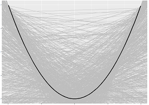
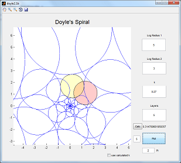

Projects
Some mini projects I've done. I am familiar with Python, R, C/C++, MATLAB, Mathematica, LaTeX, and a little html, and css.

Data Analytics Module
My assignments for Data Analytics module BDC 6307 at NUS. These are those that are coded in R and output using Rmarkdown.
Assignment 3: Learning Curve
Assignment 4: Ridge Regression
Assignment 5: Bagged Trees
Assignment 6: SVMs and PLA
Take Home Test: Implementation and Tuning
of Machine Learning Methods
Auto Compile script for LaTeX
A Windows Powershell Script I modified to auto-compile any .tex files it finds in subfolders placed in the main folders. It checks if there exists a PDF file first, then if the TeX file is newer. If there is no PDF or the TeX file is newer, it runs latex.


MONSTER FIGHTER
A simple C++ RPG game that I wrote in my free time to keep familiarised with the language. The main feature I managed to do was a menu where users can select their choices with the arrow keys. Players can level up, assign their skill points, and fight randomly generated monsters. I plan on working on it more when I have time.
Honours Project
As part of my honours project, I programmed two Executable Programs (.exe) which take user inputs and plot circle packings.


This Website
I wanted a personal website as an easy one-stop place for people to get to know me and what I am doing. Instead of using the many webpage builders out there like wordpress, wix etc., I opted to work starting with a text editor and the Bootstrap framework. This allows me to learn front-end web development using html, css and javascript. This site is always a work-in-progress which I will continue to develop as I discover new projects.